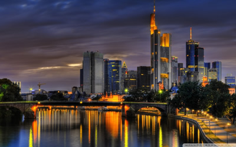

Roasted Pork Knuckle
Roasted Pork Knuckle Sauerbraten
SauerbratenCurrywurst is a fast food dish of German origin consisting of steamed, then fried pork sausage (German: Wurst) cut into slices and seasoned with curry ketchup, regularly consisting of ketchup or tomato paste blended with generous amounts of curry powder, or a ready-made ketchup-based sauce seasoned with curry and other spices.

Tokyo is Japan's capital and the world's most populous metropolis. It is also one of Japan's 47 prefectures, consisting of 23 central city wards and multiple cities, towns and villages west of the city center. The Izu and Ogasawara Islands are also part of Tokyo.
- Recommend Tourist Spots
-

Berlin
-

Frankfurt
-

Munich


 Handkäse
Handkäse

 Berliner Dom
Berliner Dom Brandenburg Gate
Brandenburg Gate Main Tower
Main Tower St. Paul's Church
St. Paul's Church Nymphenburg Palace
Nymphenburg Palace Deutsches Museum
Deutsches Museum


 Macarons
Macarons Escargot
Escargot  Foie Gras
Foie Gras

 Bordelaise sauce
Bordelaise sauce


 Xiao long bao
Xiao long bao Wonton noodles
Wonton noodles Mapo doufu
Mapo doufu Dongpo pork
Dongpo pork Jiao zi
Jiao zi Zha jiang mian
Zha jiang mian Kung Pao chicken
Kung Pao chicken Forbidden City
Forbidden City Great Wall
Great Wall Tiananmen
Tiananmen Three Gorges
Three Gorges West Lake
West Lake Oriental Pearl Tower
Oriental Pearl Tower Jiuzhaigou
Jiuzhaigou Leshan Giant Buddha
Leshan Giant Buddha Shaolin Monastery
Shaolin Monastery


 Tonkatsu
Tonkatsu Okonomiyaki
Okonomiyaki Ramen
Ramen Green Tea
Green Tea Sake
Sake Tokyo
Tokyo Hokkaido
Hokkaido Okinawa Island
Okinawa Island Kyoto
Kyoto

 Kushari
Kushari Falafel
Falafel Kashk
Kashk Sphinx
Sphinx Karnak Temple
Karnak Temple Giza Necropolis
Giza Necropolis The Valley of the Kings
The Valley of the Kings